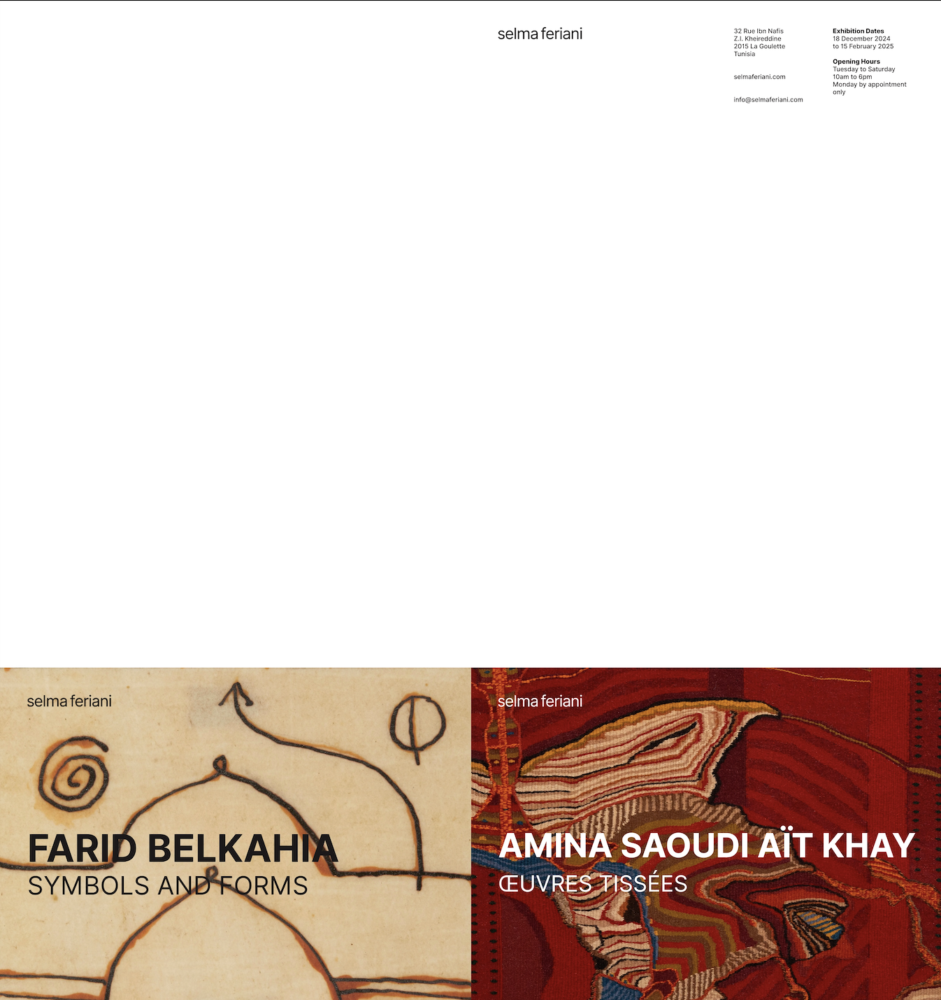
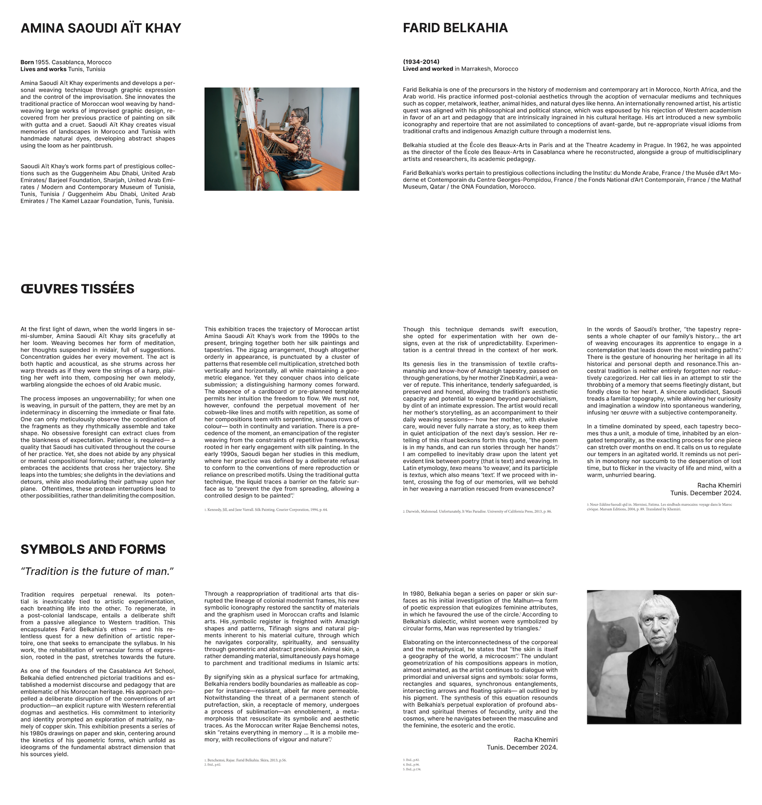
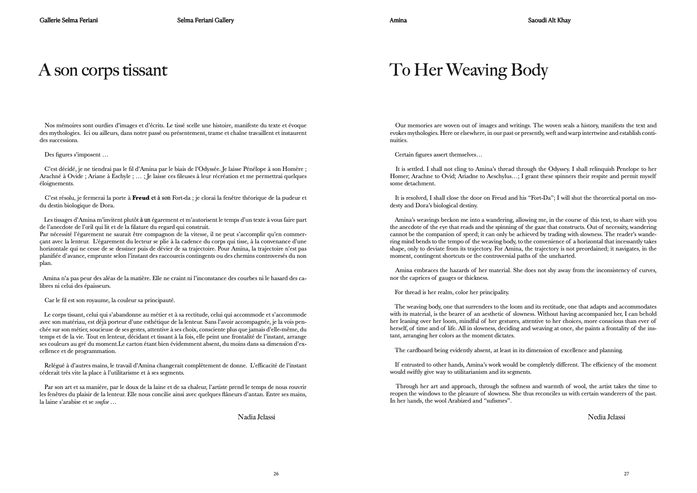

01
EDITORIAL DESIGN & VISUAL COMMUNICATIONAug 2024—Sep 2025
Selma Feriani Gallery
セルマ・フェリアーニ・ギャラリー
Designed exhibition pamphlets and a 350-page artist monograph for a contemporary art gallery. Built clear layout systems to manage large volumes of text and imagery with editorial consistency.
現代美術ギャラリーの展覧会パンフレットと、350ページのアーティスト・モノグラフを制作。大量のテキストと画像を扱うための明快なレイアウトシステムを構築しました。
Key contribution: Strengthened the gallery’s visual communication through structured typography, careful pacing, and high-end editorial presentation.
主な貢献：構造的なタイポグラフィ、丁寧なリズム設計、高品質なエディトリアル表現によって、ギャラリーのビジュアルコミュニケーションを強化しました。



